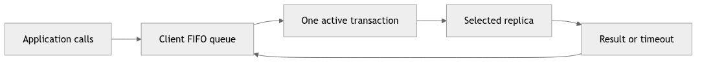
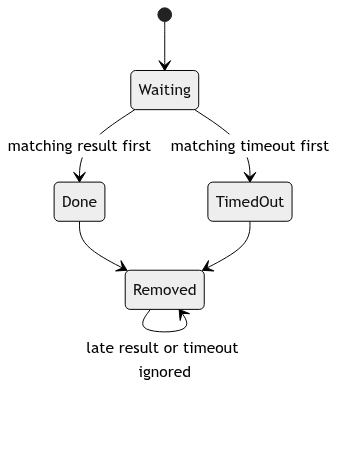
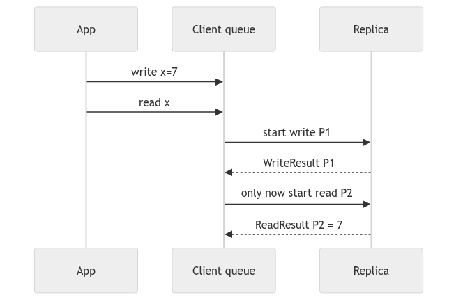
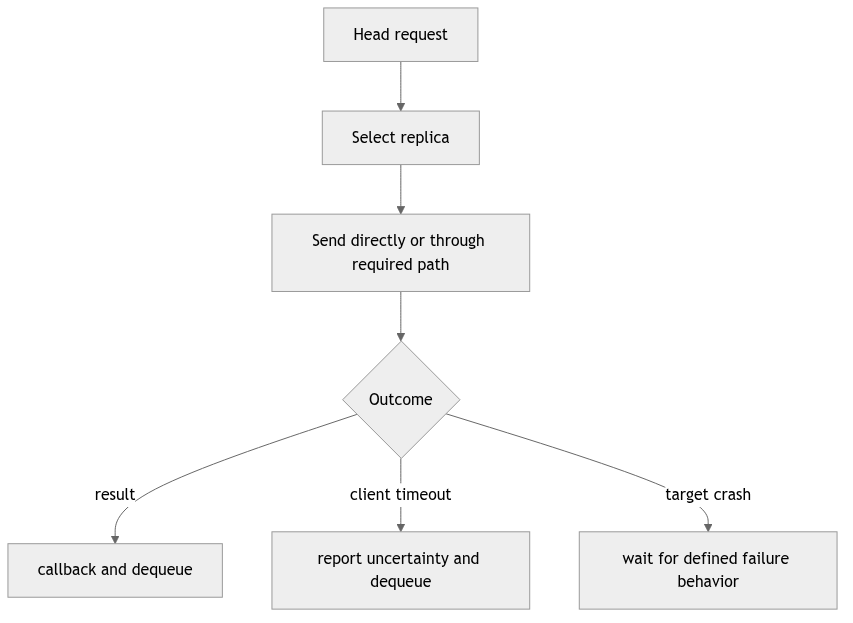
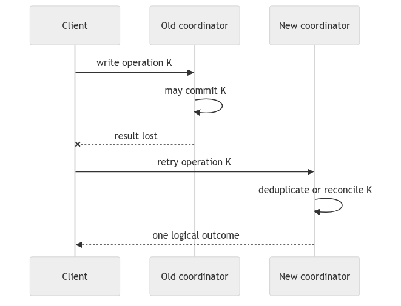
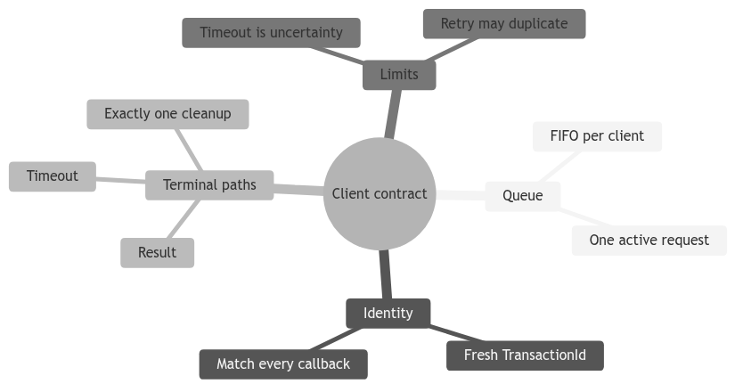

Learning goal. Follow a request from the public course API into a client transaction, understand why clients queue operations, and see how callbacks and timeouts turn internal events into observable results.
Base/current snapshot: feature/electionTransaction at d1222a2.
Read implementation reference: origin/feat/readTransaction at 1ed58b6.
Write implementation reference: origin/feat/UpdateTransaction at 59bbe80.
Client serves both application callers and protocol code.
Application callers use course-defined messages:
ReadRequest(index, optionalReplica)WriteRequest(index, value, optionalReplica)Protocol code uses transaction messages:
AbstractClient is the adapter between these worlds. It receives the public request and calls the abstract sendRead or sendWrite method implemented by Client.
A request may name a replica directly. If it does not, AbstractClient uses defaultTargetReplica, supplied when the client actor is created.
Selection logic is:
if request.replica exists:
use it
else if client.defaultTargetReplica exists:
use it
else:
throw because no target exists
This lets tests build a client permanently associated with one replica while still allowing an individual request to override the target.
The default target is an Optional<ActorRef>, but request fields use null to mean absent. Students should recognize this as mixed null/Optional style inherited from the API rather than a distributed-systems concept.
Client.getNextTransactionId combines the client’s own ActorRef with a monotonically increasing local counter. The first request is <client,0>, the next <client,1>, and so on.
sendRead constructs ReadTransaction; sendWrite constructs WriteTransaction. The transaction stores request-specific fields and the chosen destination, then enters the client’s scheduler.
The current election branch still has sendRead as TODO. The read feature branch implements it. The write path is present on the current branch but only becomes end-to-end meaningful when the update branch behavior is integrated.
The client keeps one currentTransaction and a FIFO scheduledTransactions queue.
Suppose the application quickly submits:
write(0, 10)
write(0, 20)
read(0)
The client starts the first write and queues the other two. Completion starts the next. This preserves the order in which that client exposes operations to its chosen replica and avoids one result being matched against another request.
This queue does not globally serialize all clients. Client A and client B can still submit concurrent writes. The coordinator/update protocol must impose their global order.
Client.unicast calls target.tell(msg, getSelf()) directly. Unlike replica-to-replica sends, it does not use NetworkChannel.
That means the simulated FIFO latency infrastructure primarily controls replica traffic. Client timeout values are still configurable and tests can crash the destination so no result returns. A report or exam answer should describe the implemented path exactly rather than claiming every message in the system crosses NetworkChannel.
The client’s receive builder recognizes write results/timeouts explicitly on the current branch and sends them to onMessage. The read branch relies on the fallback Msg dispatcher for read messages.
onMessage checks:
currentTransaction != null
AND currentTransaction.id == message.transactionId
If both hold, it calls computeState. Otherwise, the message is discarded as inactive or foreign.
This protects against a delayed result from transaction 3 arriving while transaction 4 is current. The check does not validate the result sender or payload; those validations belong to the transaction if required.
A read or write transaction schedules a timeout message to the client itself after sending the request.
On success:
On timeout:
A timeout is a client-local observation: “I did not receive a result before my deadline.” It does not prove whether the distributed update committed elsewhere.
The mandatory callbacks log and forward an event to an optional test listener:
callbackOnReadResult(ReadResult)callbackOnWriteResult(WriteResult)callbackOnReadTimeout(ReadTimeout)callbackOnWriteTimeout(WriteTimeout)The callback objects include enough data for tests to associate the outcome with its request and target. They are not protocol messages exchanged with replicas.
The static callbackContract check only proves that compiled code calls each callback somewhere. Runtime tests are still needed to prove it is called at the correct time with correct data.
It helps to name the layers explicitly:
Public request: AbstractClient.WriteRequest
Wire request: WriteTransaction.WriteMsg
Wire result: WriteTransaction.WriteResultMsg
Public callback: AbstractClient.WriteResult
The public classes are stable test/API objects. The wire classes carry transaction metadata. The transaction converts between them.
Client.onMessage.TestDispatcher checks idle and foreign-message dropping. Read and write regression tests check success/timeout callback shapes. Write tests on the standalone write branch manually inject WriteFinishMsg, so they prove the wrapper, not a real quorum update.
The base tests are more demanding: repeated operations, different targets, crashes, and callback timing. At the current split-branch state, they cannot be treated as an integrated pass.
Why queue client requests? To preserve that client’s request order and keep one unambiguous active result/timeout context.
Does a write timeout mean the write definitely failed? No. It means the client did not observe completion by its deadline; distributed work might have partially or fully progressed.
The invariant to remember is: a client reports an outcome only for its current transaction ID, then advances its FIFO request queue exactly once.
application call
|
v
request queue: [R1, R2, R3]
|
+--> start R1 + remember active TransactionId
|
result or timeout callback
|
v
remove R1 exactly once
|
+--> start R2
The queue is not merely a performance detail. If R2 is a read that follows a write R1, starting both at once could let the read observe the old value. A single active request gives the client a clear session order even though many replicas are running concurrently.
When reading a client handler, identify four operations and their order:
TransactionId equals the active request;If step 1 is missing, a late result from an older request can complete the new request. If step 4 is performed in both a success handler and a timeout handler without an idempotence guard, one request can dequeue two entries.
// Conceptual client completion if (!activeId.equals(msg.transactionId())) return; // stale callback activeTimer.cancel(); callback.onResult(msg.value()); activeId = null; startNextQueuedRequest();
The real code may use a callback message instead of a direct method call, but the ownership questions stay the same: which actor owns the queue, who creates the timer, and which path clears the active slot?
Suppose the client times out after sending a write. The coordinator may have already collected a majority and crashed before the result returned. Reporting “timeout” is honest about client knowledge; it is not a rollback command. A user interface should therefore avoid silently retrying a non-idempotent write unless the protocol supplies an operation ID and duplicate detection. This is also why the reports distinguish a client-visible outcome from replicated commit state.
Write a three-row trace for write(5), read(), and a late write result. Mark
the active ID at every row and explain which message must be ignored. Then
design a test that proves the queue advances once when success and timeout are
delivered in either order.

The client actor owns both the queue and the active slot. Application calls do not synchronously return replicated results; they enqueue work. Starting only the head preserves that client’s program order and gives every callback one unambiguous context. Multiple clients still run concurrently because each owns its own queue.
Inspect the point where a queued request becomes a transaction. The client must assign a fresh ID, select a target, schedule a timeout, and remember enough data to produce the typed callback. Those operations should occur in one actor turn so a result cannot race an only-partly-installed active context.

The two terminal events are mutually exclusive by FSM state, not because the losing event vanishes. Cleanup must cancel or invalidate the timer, emit one callback, clear the active ID, and start the next request once. Centralizing those actions reduces double-dequeue bugs.
Write tests in both orders. Inject success then timeout and timeout then success. Assert the exact callback count and the ID of the next started transaction. Testing only the happy order misses the core asynchronous race.

This order supports a read-your-own-write argument when write completion actually means the contacted replica has applied the commit. The queue cannot repair a premature server callback. Therefore, client ordering and replica completion semantics must be proved together.
A different client may issue a read concurrently and observe a different legal point in the global sequential history. Sequential consistency preserves each client’s order; it does not require wall-clock real-time order between clients.

Target selection affects latency and observable state. A read is local to its
target. A write sent to a follower creates a wrapper that reaches the
coordinator. Replica-to-replica traffic must use NetworkChannel, while the
client boundary follows the project’s explicit API path. Mixing these paths
can accidentally add delay twice or bypass FIFO emulation.
After target crash, the client may know only that no response arrived. Do not invent a rollback result. A timeout is an uncertainty outcome unless the protocol provides stronger evidence.

Without a stable operation key, the retry looks like a new write. Assignment may be harmless for the same value but callbacks and sequence history still duplicate. The current reports should not claim exactly-once client semantics unless the code stores and recognizes such keys across coordinator change.
For exam discussion, separate request ID, transaction ID, and update epoch. A retry may create a new transaction while retaining a logical operation ID; the inspected implementation may not yet model that distinction.

Trace queue contents, active ID, timer generation, and emitted callbacks after every event. Add foreign-result, duplicate-result, result-after-timeout, and timeout-after-result tests. Explain why silence from the wrong ID is correct behavior, while silence from the matching healthy request may be a liveness failure.